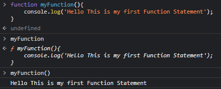

Parameters & Arguments:
The initial variable declared is Parameters. The value we pass in is Arguments.

Scope:
Where this variables are availabe in the code
Different ways to write the function


Funtion inside function

Default Parmeters

Lexical Scope

Rest Parameters


Parameter Destructuring

Callback Function


Function returning another function